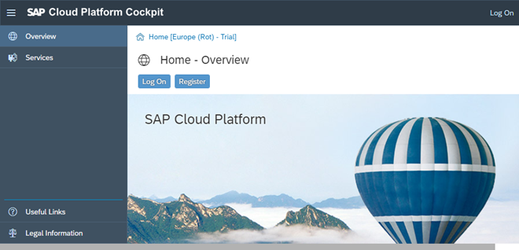
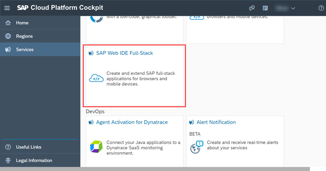

Get a Trial Account and Access SAP Web IDE
Steps for creating an SAP Cloud Platform trial account
If you do not have access to SAP Web IDE, you can create a free account. To create an account, simply register an SAP Cloud Platform trial account at https://account.hanatrial.ondemand.com/, and log on afterwards.

After you have logged on, choose Services in the navigation bar of the SAP Cloud Platform cockpit, and open the detailed information on your SAP Web IDE by choosing the SAP Web IDE Full-Stack tile.

Selecting Go to Service leads you to your personal SAP Web IDE.